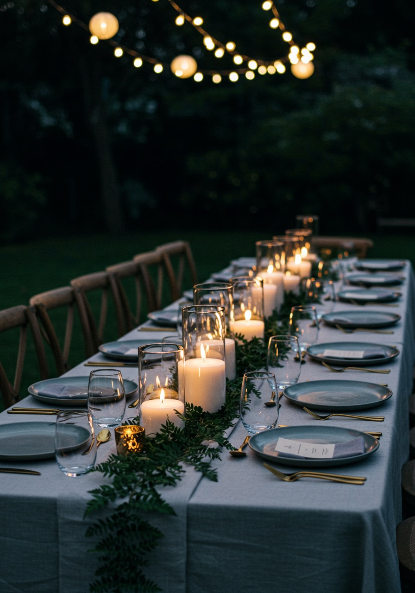
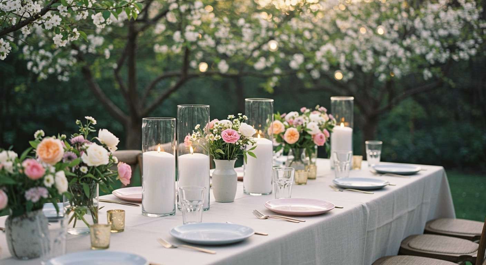
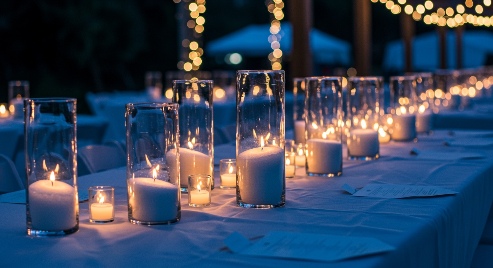

DIY vs Full-Service: How Much You’ll Save Hiring Sand-Wax Candles in Perth
August 12, 2025
When planning a wedding, especially on a budget, every dollar counts. Couples in Perth are increasingly turning to DIY options, especially for elements like décor, where the savings can be significant. Let's take a transparent look at the actual savings you can achieve by opting for DIY sand-wax candle hire from Lustre Hire compared to typical local full-service styling costs.
Transparent Cost Comparison Table
| Number of Candles | Lustre Hire DIY Hire Cost | Average Full-Service Cost in Perth* | Your Savings |
|---|---|---|---|
| 20 | $200 ($10 each) | $500 ($25 each) | $300 |
| 50 | $494 (tiered pricing) | $1,250 ($25 each) | $800 |
| 100 | $933 (tiered pricing) | $2,500 ($25 each) | $1,700 |
*Based on average quotes from local Perth stylists, where traditional candle hire and styling services typically range from $20–$30 per candle (inclusive of setup, styling, and breakdown).

Why Lustre Hire Offers Superior Value
Budget-Friendly Pricing: Lustre Hire uses simple tiered pricing designed for DIY brides and planners:
• The first 44 candles are $10 each
• Candles 45 to 89 are $9 each
• Candles beyond 89 are $8 each
With these straightforward packages, you know exactly how much you'll spend, allowing for clear and stress-free budgeting.
Convenience without Compromise: Our sand-wax candles come pre-filled, ready-to-light, and enclosed safely in reusable glass sleeves. The setup is quick and hassle-free, perfect for DIY planners or venue coordinators.

Eco-Friendly & Venue Approved: Our candles feature sustainable, reusable glass sleeves and environmentally friendly, plant-based sand wax, meeting strict venue fire and safety regulations across Perth. This ensures not just savings and ease, but peace of mind.
Real-Life Savings, Real-Life Reviews
“Hiring sand-wax candles from Lustre Hire was one of the best budget decisions we made. The candles were elegant, ready-to-light, and saved us hundreds compared to the quotes we got from styling companies!”
- Emily, DIY Bride
Booking Your DIY Elegance
Lustre Hire makes beautiful candlelit weddings accessible, sustainable, and affordable for every Perth couple. If you're ready to maximise your wedding budget without sacrificing style or convenience, we're here to help.